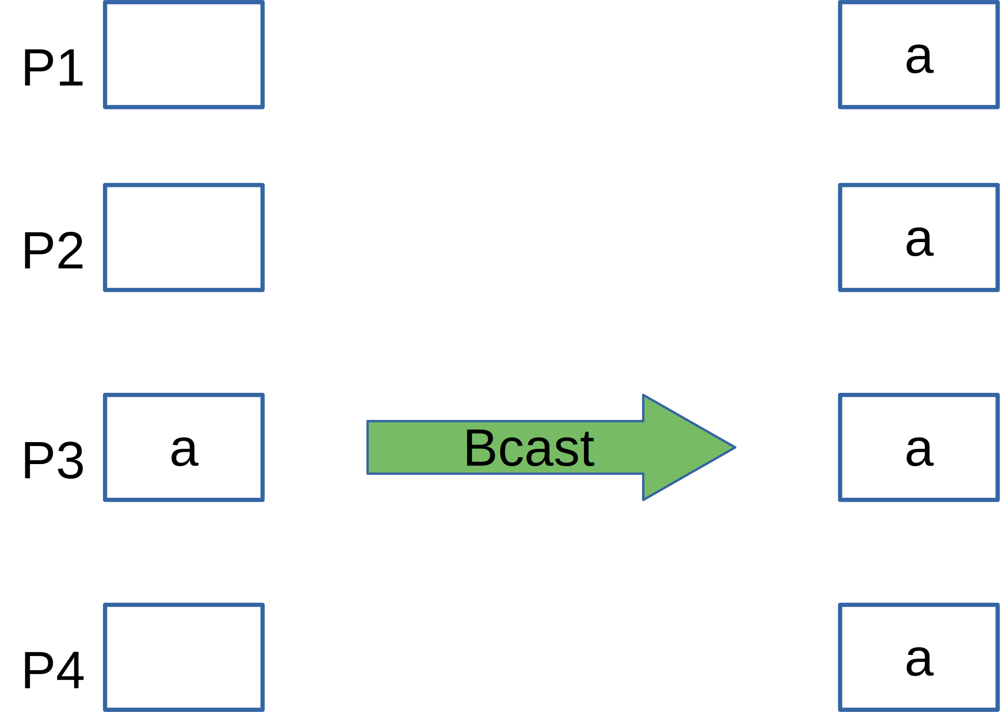
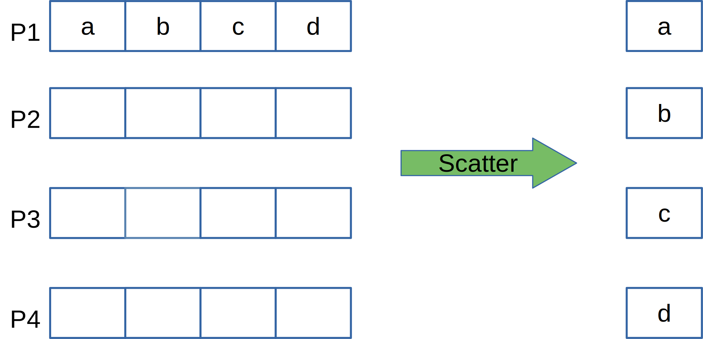
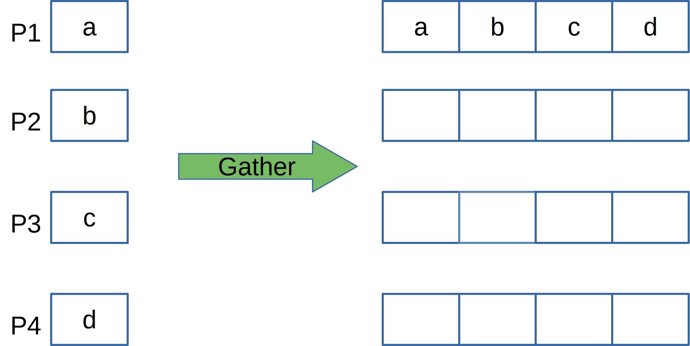
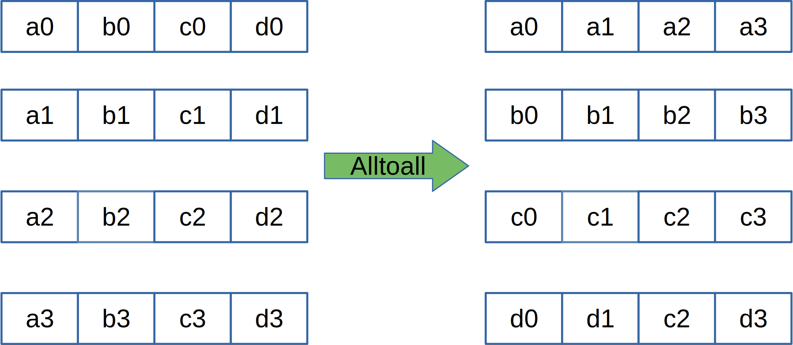

ESiWACE3-WarmWorld Summer School on HPC for Climate and Weather Applications
Understand the non-blocking communication concept
Understand the collective communication concept
Know how to implement basic parallel arithmetics using the collective functions
MPI_Wait,MPI_WaitallMPI_Test ← require periodical testingMPI_Send plus requestbuf, count, datatype, dest, tag, comm, request, err)buf(..)requestMPI_Recv plus request, without statusbuf, count, datatype, source, tag, comm, request, err)buf(..)requestrequest, status, err)requeststatus(MPI_STATUS_SIZE)MPI_Recv
count, requests, status, err)countrequests(count)status(MPI_STATUS_SIZE,*)request, flag, status, err)requestflagstatus(MPI_STATUS_SIZE)MPI_Test is non-blocking. It allows one to schedule alternative activities while periodically checking for completion.Must be called by all processes, i.e. no rank based branching
MPI_Bcast
MPI_Bcastbuffer, count, datatype, root, comm, err)buffer(..)countdatatypeinteger root
buffer(..)countdatatyperootcommMPI_Scatter
MPI_Scattersendbuf, sendcount, sendtype, recvbuf, recvcount, recvtype, root, comm, err)sendbuf(..)sendcountsendtyperecvbuf(..)recvcountrecvtyperootcommMPI_Scatter exampleWhat would be the result?
MPI_Scatter exampleWhat would be the result?
MPI_Scatter exampleWhat would be the result?
→ Rank 0 consecutively sends blocks of 4 elements from an array of length 16 to other ranks, i.e. rank 0 gets numbers 1-4, rank 1 gets 5-8 etc.
MPI_Gather
MPI_Gathersendbuf, sendcount, sendtype, recvbuf,recvcount, recvtype, root, comm, err)sendbuf(..)sendcountsendtyperecvbuf(..)recvcountrecvtyperootcommMPI_Reducesendbuf, recvbuf, count, datatype, op, root, comm, err)sendbuf(..)recvbuf(..)countdatatypeoprootcommMPI_Reduce| Operation | Meaning |
|---|---|
MPI_MAX |
Max value |
MPI_MIN |
Min value |
MPI_SUM |
Sum |
MPI_PROD |
Product |
MPI_MAXLOC |
Max value + location |
MPI_MINLOC |
Min value + location |
| Operation | Meaning |
|---|---|
MPI_LAND |
Logical AND |
MPI_BAND |
Bitwise AND |
MPI_LOR |
Logical OR |
MPI_BOR |
Bitwise OR |
MPI_LXOR |
Logical XOR |
MPI_BXOR |
Bitwise XOR |
REAL :: a(1024), aloc(128), r, rloc
...
IF (rank==0) THEN
CALL random_number(a)
END IF
CALL MPI_Scatter(a, 128, MPI_INTEGER, &
aloc, 128, MPI_INTEGER, &
0, MPI_COMM_WORLD, err)
rloc = SUM(aloc(:)**2)
CALL MPI_Reduce(rloc, r, 1, MPI_REAL, &
MPI_SUM, 0, MPI_COMM_WORLD, &
err)
WRITE(*,*) "id=", rank, " local="rloc
IF (rank==0) WRITE(*,*) "global=",r
REAL :: a(1024), aloc(128), r, rloc
...
IF (rank==0) THEN
CALL random_number(a)
END IF
CALL MPI_Scatter(a, 128, MPI_INTEGER, &
aloc, 128, MPI_INTEGER, &
0, MPI_COMM_WORLD, err)
rloc = SUM(aloc(:)**2)
CALL MPI_Reduce(rloc, r, 1, MPI_REAL, &
MPI_SUM, 0, MPI_COMM_WORLD, &
err)
WRITE(*,*) "id=", rank, " local="rloc
IF (rank==0) WRITE(*,*) "global=",r
MPI_Alltoall
MPI_Alltoallsendbuf, sendcount, sendtype, recvbuf,recvcount,recvtype, comm, err)sendbuf(..)sendcountsendtyperecvbuf(..)recvcountrecvtypecommMPI_Allreduce, MPI_Allgather – post the result to all processesMPI_Scatterv, MPI_Gatherv – scatter/gather with variable sendcount across processesNon-blocking send/receive provide potential performance gains or may help resolving deadlocks
Collective communication calls for a more efficient data exchange between several processes
Collective reduction operations enable straightforward arithmetics in parallelized datasets